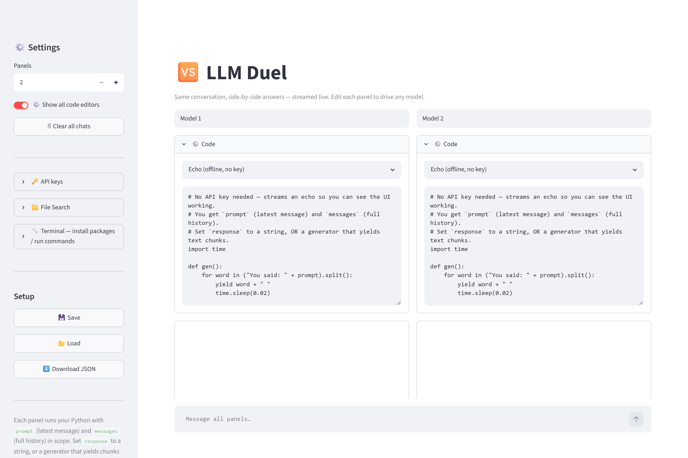
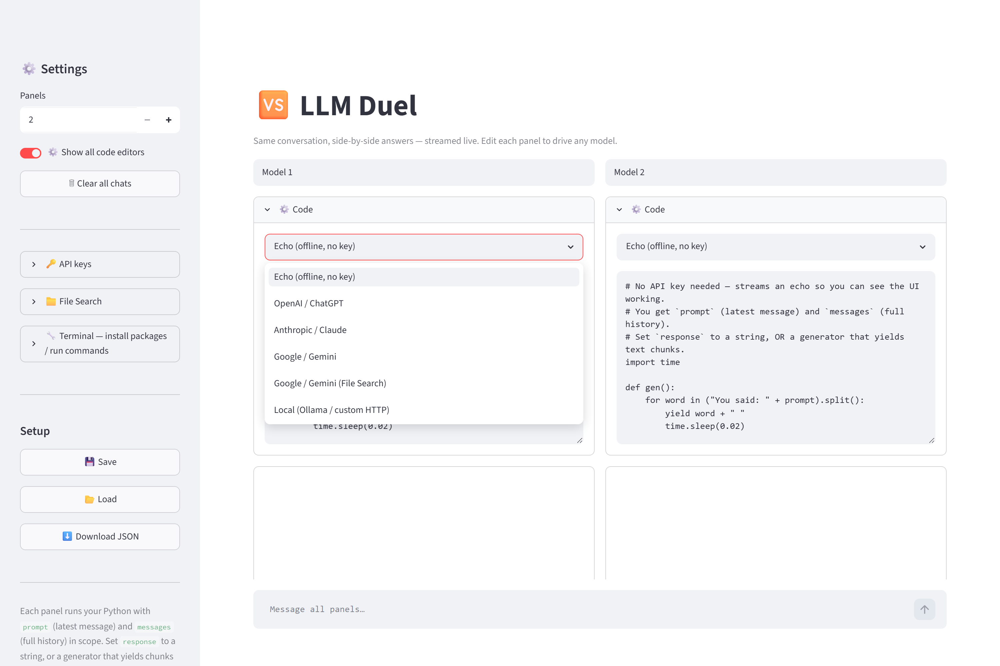
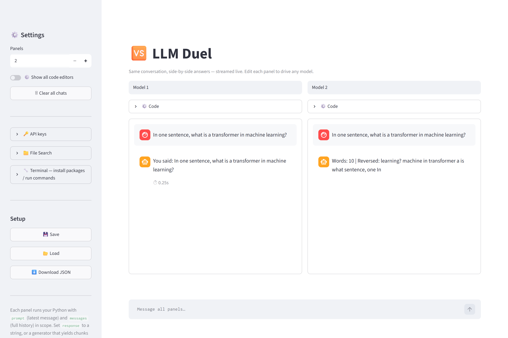
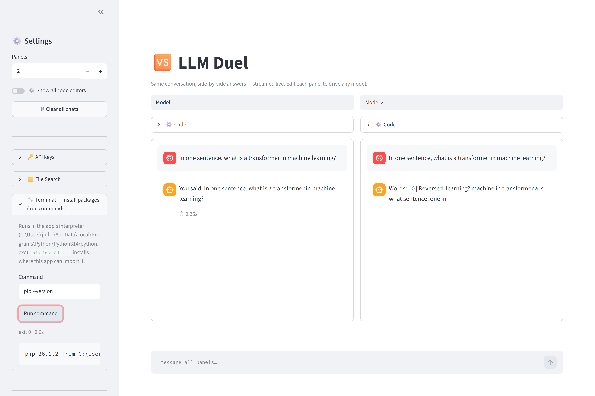

User Manual — run one prompt against two LLMs, side by side.
LLM Duel lets you hold the same conversation with two (or more) language models at once and watch their answers stream in side by side. Each model is driven by a small block of Python you can edit in the app, so you can wire up ChatGPT, Claude, Gemini, a local model, or your own — without the app needing to know how any of them work.

You need Python with Streamlit installed. From the project folder:
pip install -r requirements.txt
copy .env.example .env # then paste in your API keys (optional)Then start it in any of these ways:
run.bat — the quickest way.streamlit run app.py in a terminal.Your browser opens at http://localhost:8501. It works immediately with the built-in
Echo template — no API keys required — so you can try the interface right away.
llm_duel_config.json so your setup survives a restart.Type once at the bottom; your message goes to every panel at the same time.
The clever part is a tiny, fixed contract that every panel's code follows. That single convention is what lets one app drive any model:
| Direction | Name | What it is |
|---|---|---|
| in | prompt | The latest user message (a string). |
| in | messages | The full conversation so far —
a list of {"role", "content"} dictionaries. |
| out | response | Either a plain string (shown at once), or a generator that yields text chunks (streamed live). |
Pick a starting point from the template menu — OpenAI, Anthropic, Gemini, a local model (Ollama), or Echo — then edit it. A real example (OpenAI, streaming, multi-turn):
import os
from openai import OpenAI
client = OpenAI(api_key=os.environ.get("OPENAI_API_KEY"))
stream = client.chat.completions.create(
model="gpt-4o",
messages=messages, # full history, so it remembers the conversation
stream=True,
)
def gen():
for event in stream:
if event.choices[0].delta.content:
yield event.choices[0].delta.content
response = gen() # a generator -> streamed token by token
.env file (see section 8).Below, two panels were given different code (a plain echo vs. a small text analyzer) so you can see how
distinct each side's answer can be. The ⏱ stamp under a reply shows how long it took.

Different models need different Python packages. The built-in 🔧 Terminal panel runs
commands in the same interpreter the app uses, so anything you pip install there is
immediately importable by your panel code.
pip install openai anthropic google-generativeai
Use Save in the sidebar to write your panel names and code to
llm_duel_config.json; it loads automatically next time. Download JSON
gives you a portable copy.
API keys live in a .env file beside app.py and are read by your panel code via
os.environ:
OPENAI_API_KEY=sk-...
ANTHROPIC_API_KEY=sk-ant-...
GOOGLE_API_KEY=...exec() and the Terminal
runs shell commands — full power, by design, so any SDK works. Only paste code you trust. This is built as
a local, single-user tool.http://localhost:8501 manually.ModuleNotFoundError in a panel: install the package from the Terminal
panel, e.g. pip install openai..env, then restart the app.model="..." line in that panel's code.